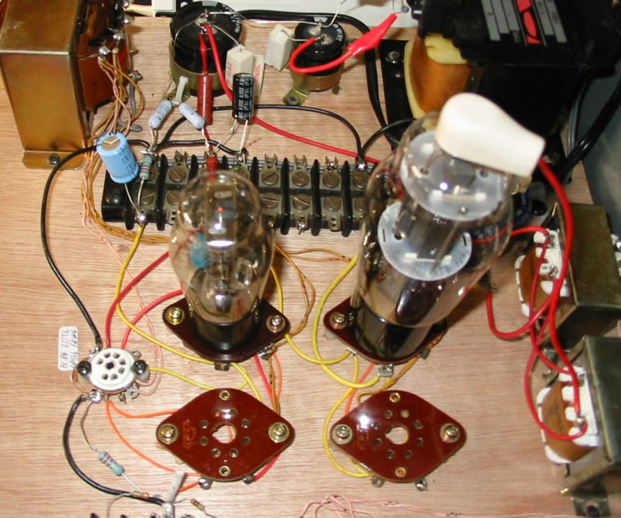
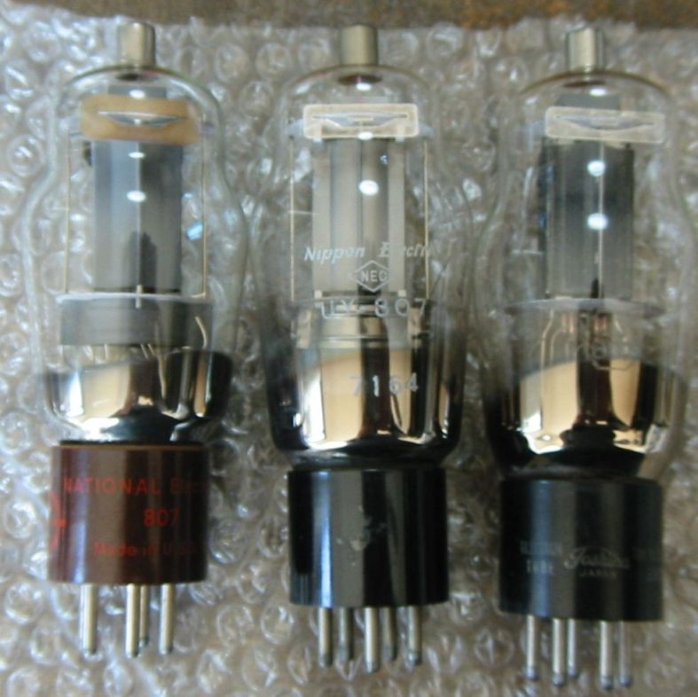
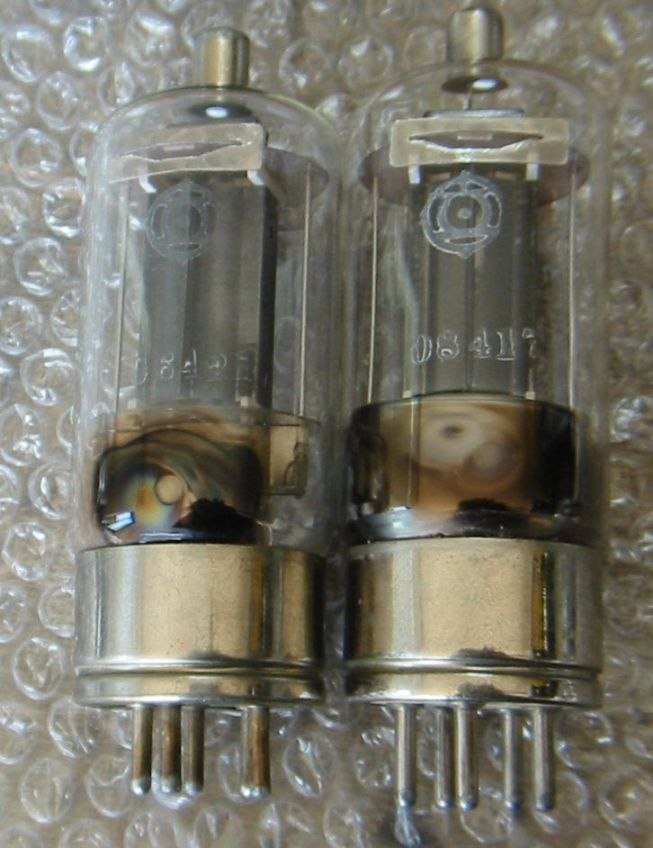
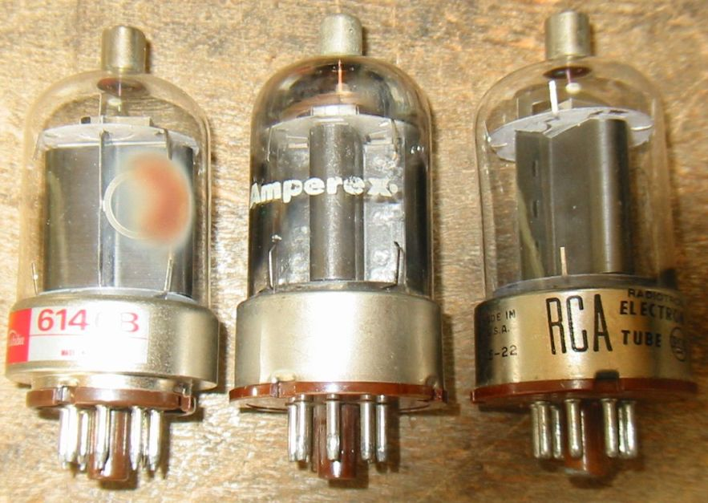
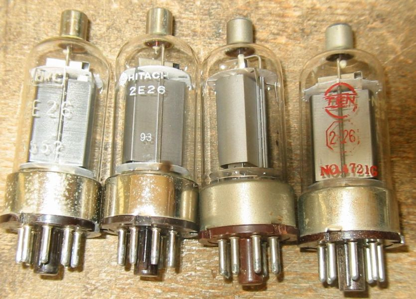
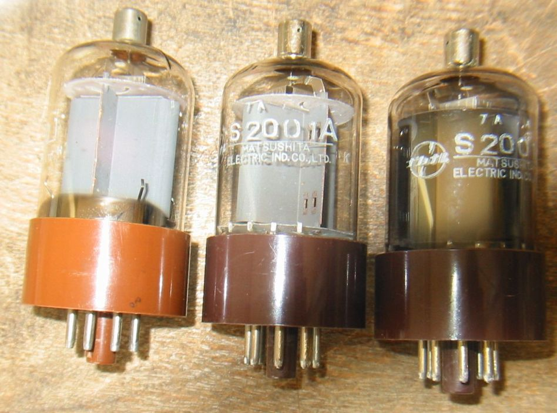
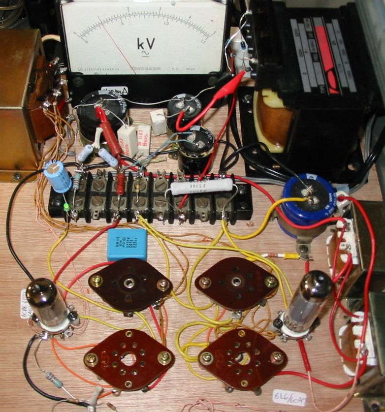
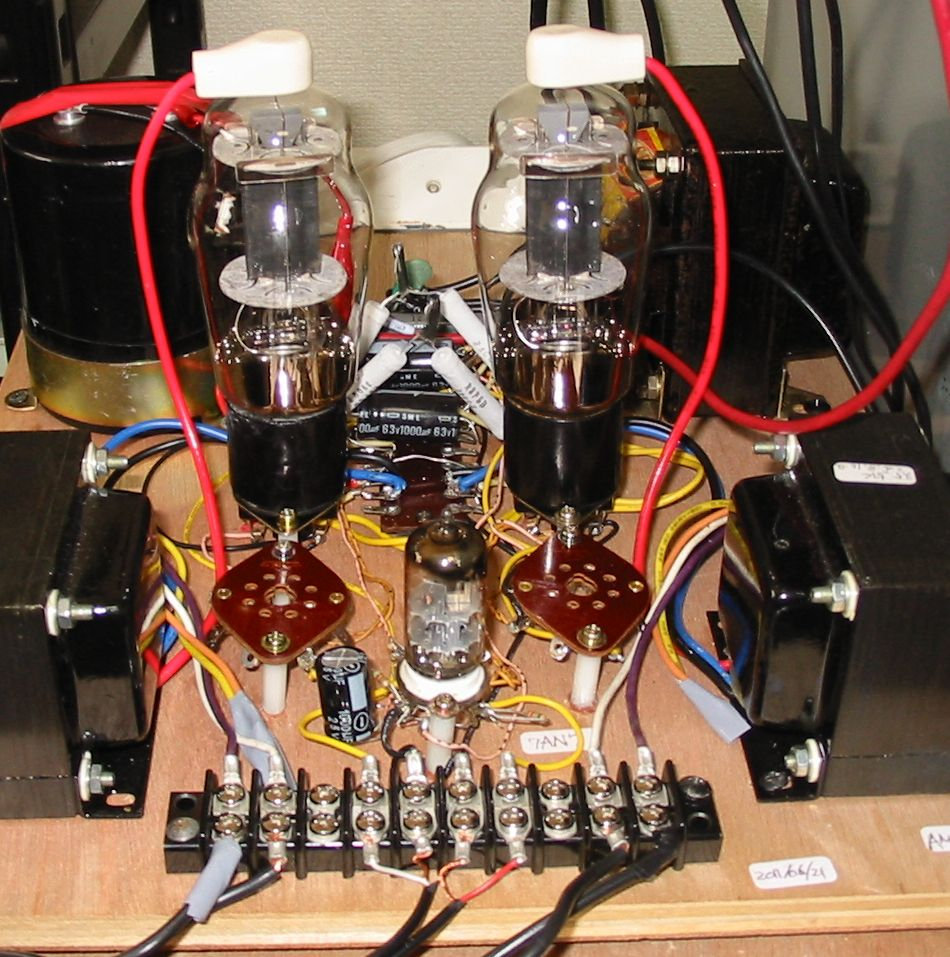

UY-807や6146など小型の送信管を3極管接続でオーディオで使ってみます。
まずテスト用アンプの試作
UY-807とそのドライバUY-76どちらもNEC製です。
出力段は3結とし、+B260Vで807のIkが40mA位になるように、カソード抵抗は500Ωにしました。
この2本のUY管以外には、6146用とそれに対応した6J5用に2つのUSのソケット、それにたくさん持っている
6CB6なども
ドライバとして3結で使いたいので、7pinミニチュア管ソケットも付けました。6CB6以外に6AU6、6AH6、6EW6それに
6AK5もなかなかいいですよ。

2010/10/18
3種類の807、左からNTIONAL Electronics、NEC、Toshibaです。Toshiba製は下側のシールドが
有りません。

2010/10/18
日立製 807A 2本 昭和20年代のものですがまだ完全に動作します。

2010/10/18
3種類の6146、左からToshiba6146B(エミゲンですがオーディオアンプでは問題なし)、Amperex6146、
RCA6146。

2010/10/18
4種類の2E26、このアンプでは50mA以上流れますので短時間のテストのみ。

2010/10/18
S2001、S2001A、右端のS2001Aこれは過大負荷で焼けたようですがまだ辛うじて動作します。

2010/10/18
6146/2E26などは一通りテストしたので、送信管ではありませんがシングルエンドの6L6、6CA7など
をテストできるよう
に改造し、その後、MT7ピン出力管もテストできるようにソケットを追加しました。
下の写真では6AU6-3結のドライバと、6AQ5-3結の出力段になっています。
KVの電圧計が付いていますが、これは元々50μAの電流計なので分流器と倍圧器を適当に作って
フルスケール150mAの電流計に改造してあり、今の指示は、出力段のカソード電流が30mAということ
になります。

2010/10/22
再びUY-807
今度はステレオ対応で、UL接続です。
ドライバは7AN7を使ってみました。この球はカスコード増幅用に特殊化されているので、
ちょっと使いずらく全く人気が有りません。
6BG6用に2つのUSのソケットも付けておきました。

2011/06/23
back to top
back to home page